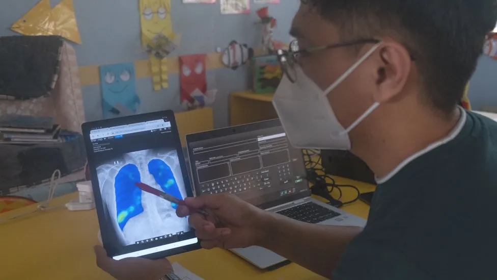

Portable X-ray machines"can literally be the difference between life and death", says radiographer Sam Pilkington.
For most of us, if we need to be X-rayed, the procedure is done in a hospital. But for acutely unwell patients, or for infection control, Miss Pilkington says that portable machines are very helpful.
This is because "they remove the excess burden of transportation from the patients", says the final-year student at the University of the West of England in Bristol, who is also a member of the Institute of Physics. Instead the X-ray equipment goes to them.
There are obvious advantages for remote locations, including battlefields, roadsides, and disaster zones.
And thanks to the increased availability - and ability - of such portable systems their usage is growing rapidly. With the coronavirus pandemic fueling this increase, the global portable X-ray market was worth a reported $7.1bn(£5.6bn) last year. And this is expected to rise to $14bn by 2028.
One remote place that has tested ultraportable X-ray hardware is the Orkney Islands in Scotland. Prior to a trial there from November 2021 to January 2022, 73% of patients who were due for an X-ray did not attend their appointments - due in large part to the costs and time needed to reach distant hospitals.
